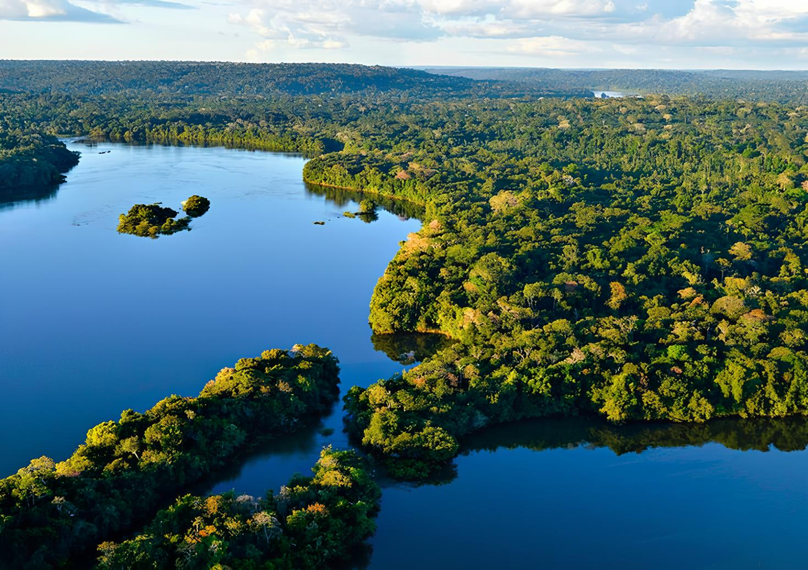

Todos os anos, o fogo rouba partes da Amazônia. Esse é o traço mais marcante do avanço da agricultura (principalmente da soja) e da pecuária. Ambas são atividades econômicas e importantes. Durante a estação seca, que vai de maio a setembro, o Brasil chama a atenção do mundo pelos incêndios florestais. A queimada é uma prática de manejo agrícola usada para abrir espaço para as plantações de subsistência (a chamada agricultura de corta-e-queima) e para as pastagens de gado.
Inúmeras são as causas que suscitam a remoção da cobertura vegetal da Floresta Amazônica, causas essas que estão diretamente atreladas ao momento histórico-econômico do Brasil. A década de 1970 é tida como o marco inicial para o avanço do desmatamento na Amazônia. Durante esse período, foram os projetos de infraestrutura para a região que ocasionaram a retirada da cobertura vegetal para a construção de estradas, como foi o caso da Rodovia Transamazônica
A região Nordeste do estado do Amazonas poderá apresentar um aumento de 5°C graus na temperatura e uma redução de até 25% no volume de chuvas nos próximos 25 anos. “Além do Amazonas, mais cinco estados estão sendo avaliados: Espírito Santo, Maranhão, Mato Grosso do Sul, Paraná e Pernambuco. Também foi desenvolvida uma ferramenta, um software, para mensurar a vulnerabilidade humana às mudanças climáticas, conforme cada município”, destaca o pesquisador.
Os 5.015.067,749 quilômetros quadrados da Amazônia brasileira abrigam uma enorme biodiversidade. Cientistas já classificaram cerca de 40.000 espécies vegetais, 3.000 peixes, 1.000 aves, 450 mamíferos, 400 anfíbios, 400 répteis e quase 130.000 invertebrados, e estima-se que ainda há várias espécies desconhecidas.
Diferentes animais são essenciais para a polinização e contribuem para a dispersão de sementes, por exemplo, favorecendo a regeneração em outras áreas e o plantio natural de florestas. As plantas podem abrigar outras espécies e servir de alimento para animais herbívoros, que por sua vez também podem ser alimentos para tantos outros. Alterar um sistema natural pode causar desequilíbrio na densidade populacional das espécies e acarretar tanto o aparecimento de pragas As pragas podem invadir lavouras, infestar áreas urbanas e transmitir doenças para nós, humanos. A escassez de presas pode levar grandes espécies predadoras a buscar alimentos entre as criações nas fazendas, por exemplo.

Na Amazônia brasileira, as queimadas geralmente se espalham floresta adentro a partir das terras agrícolas adjacentes. Entre os anos 2000 e 2002, os incêndios florestais quase triplicaram, passando de 16 mil para 42 mil casos por ano. Essas queimadas abrem espaço para a criação de gado, que é a principal causa da conversão direta das florestas úmidas tropicais. Os produtores de soja aos poucos avançam sobre as terras de produção de gado e empurram a pecuária para novas áreas. Junto com a pecuária, o desmatamento vai tomando espaço da floresta.